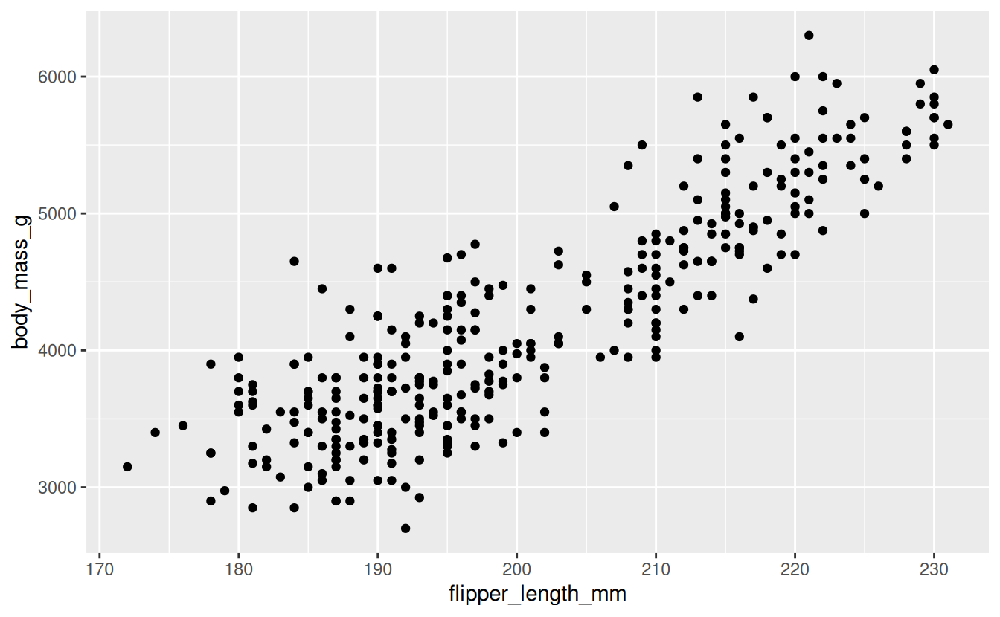
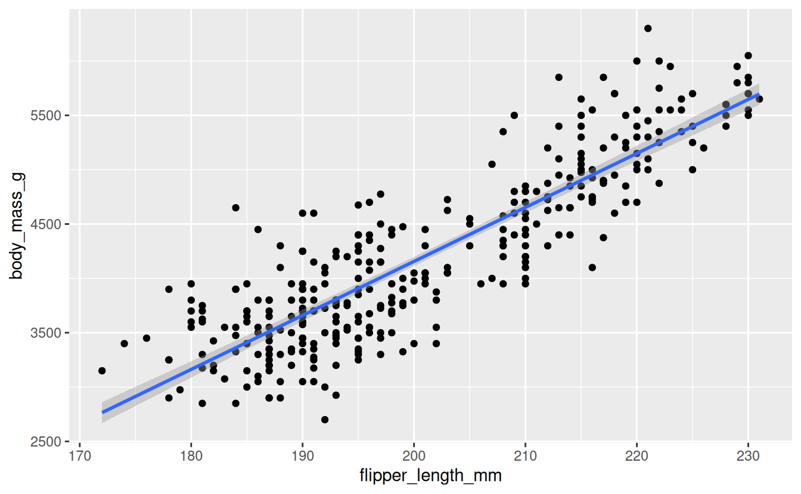
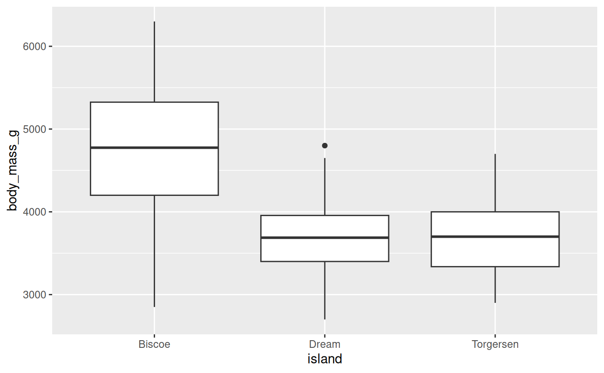
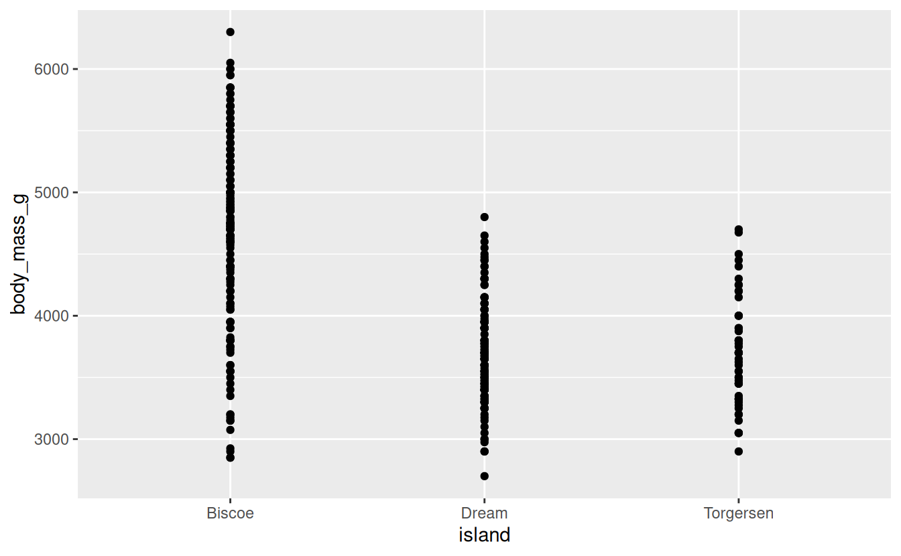

AE 13: Modelling penguins
Suggested answers
These are suggested answers. This document should be used as reference only, it’s not designed to be an exhaustive key.
In this application exercise we will be studying penguins. The data can be found in the palmerpenguins package and we will use tidyverse and tidymodels for data exploration and modeling, respectively.
Please read the following context and take a glimpse at the data set before we get started.
This data set comprising various measurements of three different penguin species, namely Adelie, Gentoo, and Chinstrap. The rigorous study was conducted in the islands of the Palmer Archipelago, Antarctica. These data were collected from 2007 to 2009 by Dr. Kristen Gorman with the Palmer Station Long Term Ecological Research Program, part of the US Long Term Ecological Research Network. The data set is called
penguins.
glimpse(penguins)Rows: 344
Columns: 8
$ species <fct> Adelie, Adelie, Adelie, Adelie, Adelie, Adelie, Adel…
$ island <fct> Torgersen, Torgersen, Torgersen, Torgersen, Torgerse…
$ bill_length_mm <dbl> 39.1, 39.5, 40.3, NA, 36.7, 39.3, 38.9, 39.2, 34.1, …
$ bill_depth_mm <dbl> 18.7, 17.4, 18.0, NA, 19.3, 20.6, 17.8, 19.6, 18.1, …
$ flipper_length_mm <int> 181, 186, 195, NA, 193, 190, 181, 195, 193, 190, 186…
$ body_mass_g <int> 3750, 3800, 3250, NA, 3450, 3650, 3625, 4675, 3475, …
$ sex <fct> male, female, female, NA, female, male, female, male…
$ year <int> 2007, 2007, 2007, 2007, 2007, 2007, 2007, 2007, 2007…Our goal is to understand better how various body measurements and attributes of penguins relate to their body mass. First, we are going to investigate the relationship between a penguins’ flipper lengths and their body masses.
- Question: Based on our research focus, which variable is the response variable?
Body mass.
- Demo: Visualize the relationship between flipper length and body mass of penguins.
ggplot(penguins, aes(x = flipper_length_mm, y = body_mass_g)) +
geom_point()Warning: Removed 2 rows containing missing values or values outside the scale range
(`geom_point()`).
Correlation
-
Your turn (5 minutes):
-
What is correlation? What values can correlation take?
Strength and direction of a linear relationship. It’s bounded by -1 and 1.
Are you good at guessing correlation? Give it a try! https://www.rossmanchance.com/applets/2021/guesscorrelation/GuessCorrelation.html
-
- Demo: What is the correlation between flipper length and body mass of penguins?
Defining, fitting, and summarizing a model
- Demo: Write the population model below that explains the relationship between body mass and flipper length.
\[ body~mass = \beta_0 + \beta_1 \times flipper~length + \epsilon \]
- Demo: Fit the linear regression model and display the results. Write the estimated model output below.
bm_fl_fit <- linear_reg() |>
fit(body_mass_g ~ flipper_length_mm, data = penguins)
tidy(bm_fl_fit)# A tibble: 2 × 5
term estimate std.error statistic p.value
<chr> <dbl> <dbl> <dbl> <dbl>
1 (Intercept) -5781. 306. -18.9 5.59e- 55
2 flipper_length_mm 49.7 1.52 32.7 4.37e-107\[ \widehat{body~mass} = -5781 + 49.7 \times flipper~length \]
-
Your turn: Interpret the slope and the intercept in the context of the data.
Intercept: Penguins with 0 flipper length are expected, on average, to weigh -5,781 grams.
Slopes: For each additional millimeter of a penguin;s flipper length, the weight of their penguin is expected to be higher, on average, by 49.7 grams.
Your turn: Recreate the visualization from above, this time adding a regression line to the visualization
geom_smooth(method = "lm").
ggplot(
penguins,
aes(x = flipper_length_mm, y = body_mass_g)
) +
geom_point() +
geom_smooth(method = "lm")`geom_smooth()` using formula = 'y ~ x'Warning: Removed 2 rows containing non-finite outside the scale range
(`stat_smooth()`).Warning: Removed 2 rows containing missing values or values outside the scale range
(`geom_point()`).
- Demo: What is the estimated body mass for a penguin with a flipper length of 210?
penguin_flipper_210 <- tibble(flipper_length_mm = 210)
bm_fl_fit |>
predict(new_data = penguin_flipper_210)# A tibble: 1 × 1
.pred
<dbl>
1 4653.- Your turn: What is the estimated body mass for a penguin with a flipper length of 100?
But we shouldn’t do this prediction based on this model since 100 mm is outside of the range of the data (extrapolation).
Another model
- Demo: A different researcher wants to look at body weight of penguins based on the island they were recorded on. How are the variables involved in this analysis different?
Predictor is categorical.
- Demo: Make an appropriate visualization to investigate this relationship below. Additionally, calculate the mean body mass by island.
ggplot(penguins, aes(x = island, y = body_mass_g)) +
geom_boxplot()Warning: Removed 2 rows containing non-finite outside the scale range
(`stat_boxplot()`).
# A tibble: 3 × 2
island mean_bm
<fct> <dbl>
1 Biscoe 4716.
2 Dream 3713.
3 Torgersen 3706.-
Demo: Change the geom of your previous plot to
geom_point(). Use this plot to think about how R models these data.
ggplot(penguins, aes(x = island, y = body_mass_g)) +
geom_point()Warning: Removed 2 rows containing missing values or values outside the scale range
(`geom_point()`).
- Your turn: Fit the linear regression model and display the results. Write the estimated model output below.
bm_island_fit <- linear_reg() |>
fit(body_mass_g ~ island, data = penguins)
tidy(bm_island_fit)# A tibble: 3 × 5
term estimate std.error statistic p.value
<chr> <dbl> <dbl> <dbl> <dbl>
1 (Intercept) 4716. 48.5 97.3 8.93e-250
2 islandDream -1003. 74.2 -13.5 1.42e- 33
3 islandTorgersen -1010. 100. -10.1 4.66e- 21-
Demo: Interpret each coefficient in context of the problem.
Intercept: Penguins from Biscoe island are expected to weigh, on average, 4,716 grams.
-
Slopes:
Penguins from Dream island are expected to weigh, on average, 1,003 grams less than those from Biscoe island.
Penguins from Torgersen island are expected to weigh, on average, 1,010 grams less than those from Biscoe island.
Demo: What is the estimated body weight of a penguin on Biscoe island? What are the estimated body weights of penguins on Dream and Torgersen islands?